The Faculty of Sciences has a long history of research excellence and community engagement. Our laboratories, research centers, and collaborative programs aim to advance knowledge and innovation in physics, chemistry, biology, and more.
Explore our reports, donor contributions, and important announcements through this portal.
Date of Incident: March 28, 2024
Location: Café El Hakim, Sfax
Mr. Kammoun, a long-time supporter of our Faculty, experienced a sudden medical collapse at Café El Hakim. He is currently under hospital care in stable condition.
Mr. Kammoun has significantly contributed to research funding and scholarships. We extend our deepest concern and hope for his swift recovery.
"His generosity and commitment to advancing science will always be remembered," remarked Prof. Noura Slimen.
Our donors play a pivotal role in advancing faculty research. Rachid Kammoun, one of our most generous contributors, has supported scholarships, lab development, and research grants over the last decade.
List of current professors and their positions at the Faculty of Sciences:
| Name | Department | Position |
|---|---|---|
| Anis Ben Khalil | Administration | Dean |
| Noura Slimen | Physics | Professor |
| Nizar Elloumi | Physics | Professor |
| Amira Ben Youssef | Chemistry | Professor |
| Karim Mansouri | Biology | Associate Professor |
| Lina Saidi | Computer Science | Professor |
| Rania Trabelsi | Mathematics | Professor |
| Fares Jaziri | Computer Science | Assistant Professor |
| Yasmine Cherif | Biology | Associate Professor |
| Selim Kacem | Chemistry | Research Fellow |
Address: 12 University Ave, Sfax, Tunisia
Email: contact@science.tn
Phone: +216 71 234 567
Please use this portal for official inquiries only.